François A. Gougeon, Ph.D.
The Individual Tree Crown (ITC) techniques and methods of crown delineation, species classification and regrouping into forest stands can be successfully used with images from the newest generation of high spatial resolution (<1 m/pixel) satellites, like IKONOS, QuickBird, OrbView, WorldView, GeoEye ... However, because of their lower spatial resolution compared to the aerial data for which the ITC approach was originally developed (30-60 cm/pixel), we are partially getting away from the concept of "true" individual tree forest inventories (i.e., there are more tree clusters - less tree crowns are separated as individual objects). The even lower spatial resolution (e.g., 4 or 2.4 m/pixel) of the multispectral bands also affects the species recognition capabilities. Nevertheless, ITC analyses used on such satellite images can produce very good information at the stand level.
Abstract
In forestry, the availability of high spatial resolution (<1 m/pixel) imagery from new earth observation satellites like IKONOS favours a shift in the image analysis paradigm from a pixel-based approach towards one dealing directly with the essential structuring element of such images: the individual tree crown (ITC). This paper gives an initial assessment of the effects of 1 and 4 m/pixel spatial resolutions (panchromatic and multispectral bands, respectively) on the detection, delineation, and classification of the individual tree crowns seen in IKONOS images. Winter and summer IKONOS images of the Hudson plantation of the Petawawa Research Forest, Ontario, Canada were analyzed. The panchromatic images were resampled to 0.5 m/pixel and then smoothed using a 3x3 kernel mean filter. A valley following algorithm and rule-based isolation module were applied to delineate the individual tree crowns. Local maxima within a moving 3x3 window (i.e., Tree Tops) were also extracted from the smoothed images for comparis on. Crown delineation and detection results were summarised and compared with field tree counts. Overall, the ITC delineation and the local maxima approaches led to tree counts that were on average 15% off for both seasons. Visual inspection reveals delineation of clusters of two or three crowns as a common source of error. Crown-based species spectral signatures were generated for six classes representing conifer species, plus a hardwood class and a shrub class. After the ITC-based classification, classification accuracy was ascertained using separate test areas of known species. The overall accuracy was 59%. Important confusion exists between red and white spruces, and mature versus immature white pines, but post-classification regroupings into single spruce and white pine classes led to an overall accuracy of 67%.
Reference
Gougeon, F.A. and Leckie, D.G. 2006 The individual tree crown approach applied to IKONOS images of a coniferous plantation area. Photogrammetric Engineering and Remote Sensing. 72(11):1287-1297
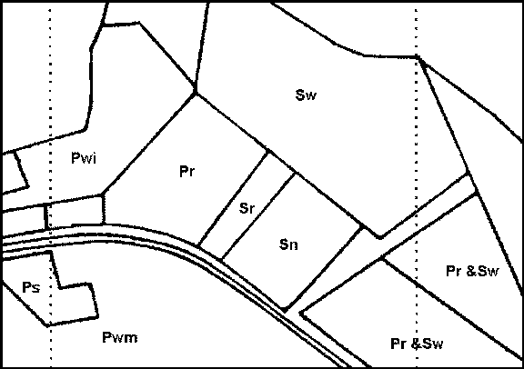
Figure 1. The Hudson site consisting of mature plantations of white spruce (Sw), red pine (Pr), red spruce (Sr), Norway spruce (Sn), Scots pine (Ps), mature (Pwm) and immature (Pwi) white pine and mixed sites containing red pine and white spruce (Pr & Sw). The dotted lines correspond to the area extracted from the winter IKONOS panchromatic image (300 x 300m2), as seen in Figures 3 and 4. The area extracted from the summer IKONOS images is slightly bigger (720 x 560m2) than illustrated here, but Figures 2 and 5-8 have been cropped to correspond the outside boundaries of this figure, concentrating on the plantations of interest.
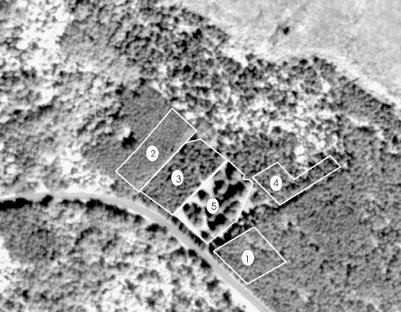
Figure 2. Part of the IKONOS panchromatic sub-image showing the Hudson site on July 6, 2000 and the five tree-counting test areas used for the results reported in Table 2
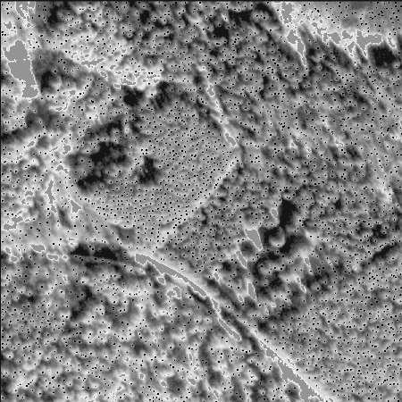
Figure 3. Winter IKONOS sub-image of the Hudson site with snow partially masked out (uniform gray) showing the detected local maxima (Tree Tops) as black dots .
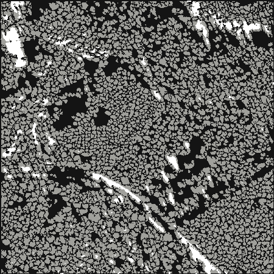
Figure 4. Individual Tree Crowns (ITCs) and/or Isolated objects (Isols) delineated on the winter IKONOS sub-image (300 x 300m2) of the Hudson plantation site with snow partially masked out (in white).
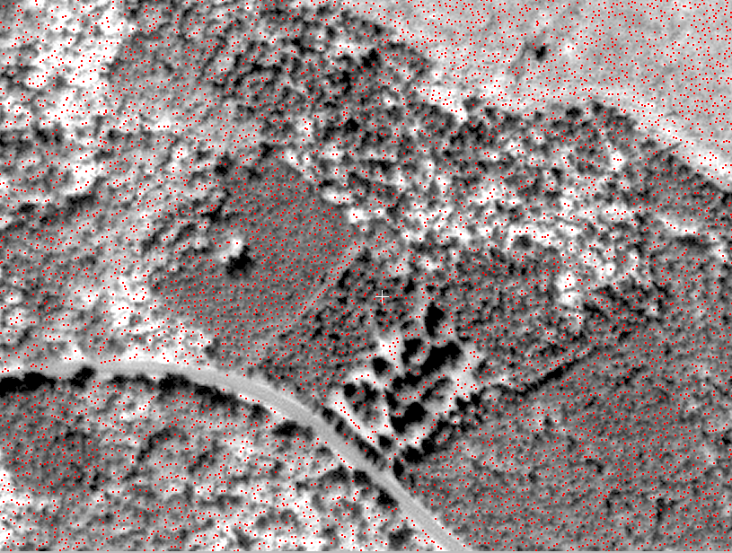
Figure 5. Summer IKONOS panchromatic sub-image of the Hudson plantation site with detected local maxima (TreeTops) shown in red.
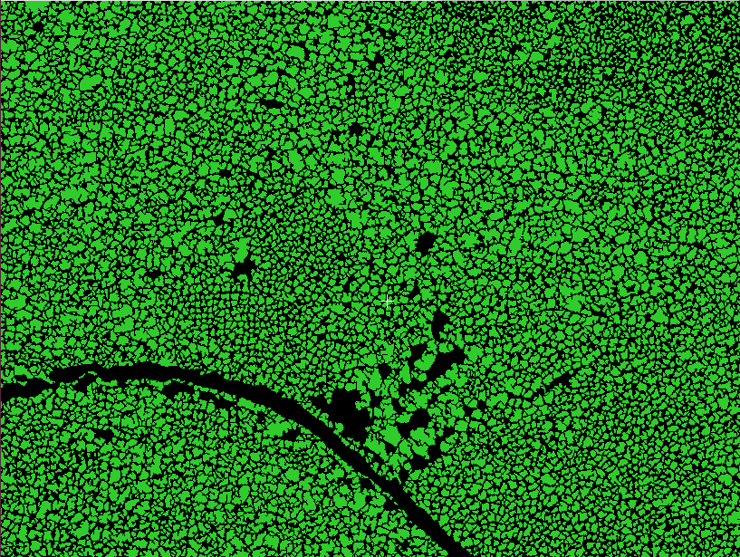
Figure 6. Individual Tree Crowns (ITCs) and/or Isolated objects (Isols) delineated on the summer IKONOS sub-image of the Hudson plantation site.
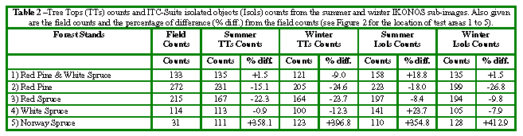
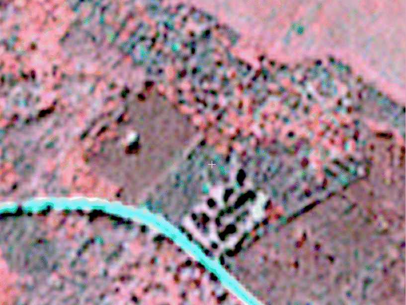
Figure 7. Near-infrared rendition of the summer IKONOS multispectral sub-image of the Hudson plantation site illustrating the effects of a 4 m/pixel spatial resolution (i.e., individual tree crowns (ITCs) can not be seen, nor extracted). This lower spatial resolution also has effects on the ITC species recognition capabilities of IKONOS.
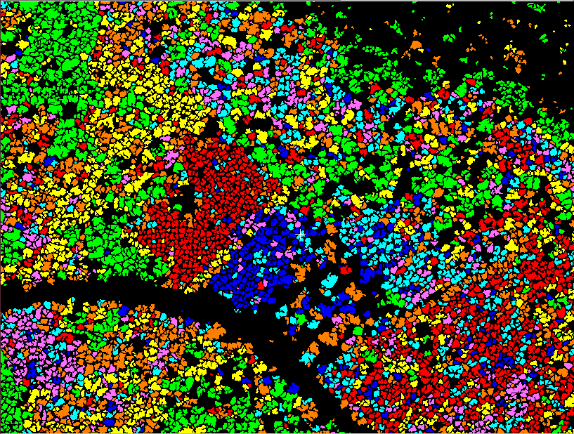
Figure 8. ITC classification of the summer IKONOS sub-image with seven classes: red pine (red), red spruce (blue), white spruce (cyan), Scots pine (pink), immature white pine (yellow), mature white pine (orange) and hardwood (green).
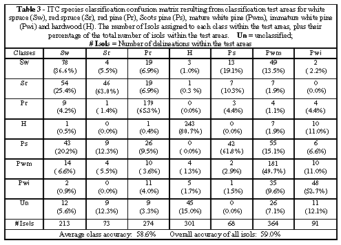
NOTES:
Better species classification results are obtained when the panchromatic band is added to the purely spectral bands in classification process. This may be more related to its higher spatial resolution than the fact that it goes higher into the infra-red part of the spectrum than the infra-red band itself (as seen in Appendix Table 1 ).
Better species classification results "may" be obtained from pan-sharpened multispectral images. In any case, pan-sharpened multispectral images are more useful to the user, specially when creating training and testing areas in more complex forests (avoiding a Figure 7 look).
For forestry applications, the high spatial resolution (< 1 m/pixel) of the newest satellite images allows us to perceive individual trees whereas with previous lower resolution satellite imagery there was only forest. This commands a more object-oriented image analysis paradigm, one that drives us away from pixel-based techniques and towards the delineation and classification of individual tree crowns. Fortunately, such techniques have been developed to analyse even higher resolution images (30-60 cm/pixel) from airborne sensors. This paper analysed their application to IKONOS images of a coniferous plantation and reports on their suitability and performance.
The crown detection and classification results at spatial resolutions of 1 and 4 m/pixel are very encouraging. For both winter and summer IKONOS images, tree counts with the well known local maxima (or Tree Top) approach were approximately 15% off. Counts with the ITC approach were also only 15% off relative to a ground survey. Th is compares well with counts that were 8% off using 31 cm/pixel aerial data (Gougeon 1995b). However, there can be an unknown cancelling effect of omission and commission errors. Quantification of tree-for-tree correspondence of automated isolations was not possible in this study, but visual inspection indicated that clusters of two or three trees occurred. Clusters were more prevalent in the white pine and hardwood areas. Single species, even age stands of essentially conical shaped trees facilitated the delineation process. Less accurate delineation and count results are to be expected with more diverse natural forest stands. An overall ITC species classification accuracy of 66.5% was achieved, but only after separating and recombining certain hard to separate but related classes (white and red spruces; mature and immature white pines). Again, the single species, even age, plantation nature of the stands in this study probably had mitigating effects against the poorer spatial resolution (4 m/pixel) of the m ultispectral data.
From the above analysis, it becomes clear that IKONOS images may not be suitable to produce real individual tree inventories. However, it is speculated (and on-going studies seem to confirm) that using an ITC-based approach can lead to valuable results at the forest stand level, especially relative to stand species composition (CLC-Camint, 2002; 2003; Leckie et al., 2003b). It is also known that some of the information provided by such ITC-based analyses (i.e., composition, density, canopy closure) can be used to generate, almost automatically, forest stand boundaries (Gougeon, 1997b; Gougeon and Leckie, 2003), a very important step in the production of traditional forest management inventories. In addition, because species comprising less than 10% of a stand s composition (25% in some cases) are generally not mapped in typical forest management inventories, ITC-based analyses of IKONOS imagery can be used to produce highly specialized inventories, such as those based on the detection and localization of minority, yet commercially important species (Gougeon et al., 2001; CLC-Camint, 2001). The potential also exists to produce novel information for wildlife, health and biodiversity assessments (CLC-Camint, 2003; Leckie et al., 2003a). Thus, as long as real individual tree inventories are not expected, IKONOS image analyses with ITCbased tools can lead to very valuable, sometimes heretofore unavailable, forestry information.
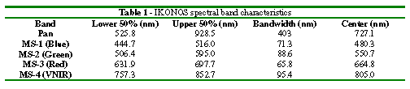
Redid page my way (FG) -- Feb. Oct. 2026